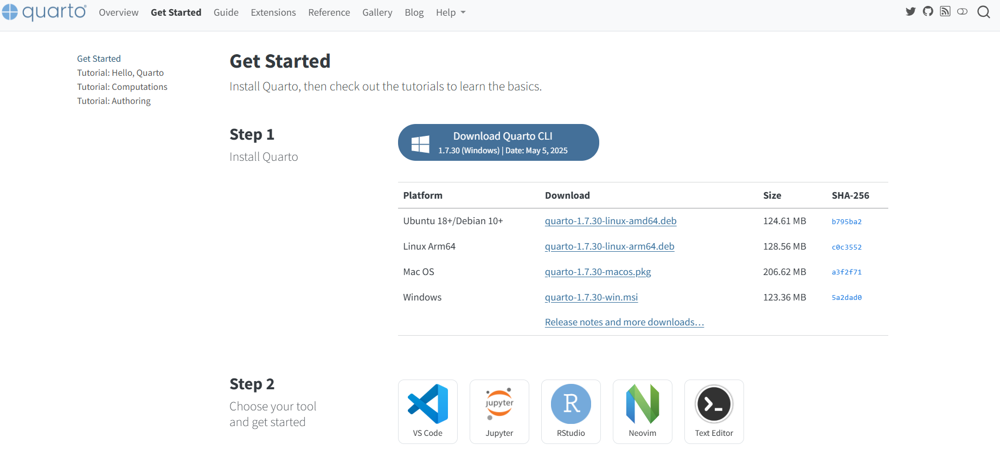
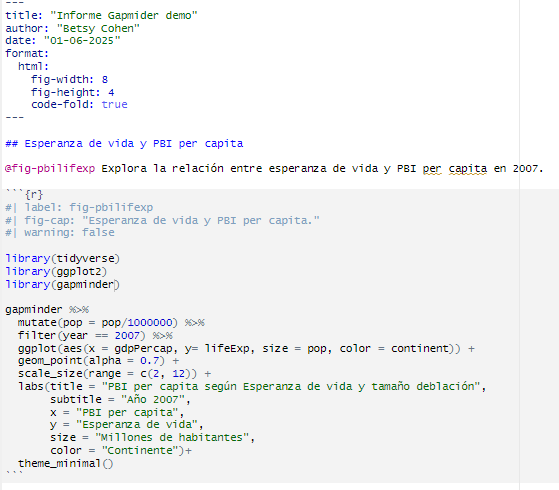
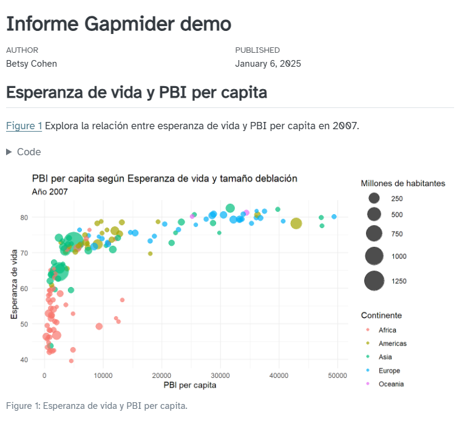
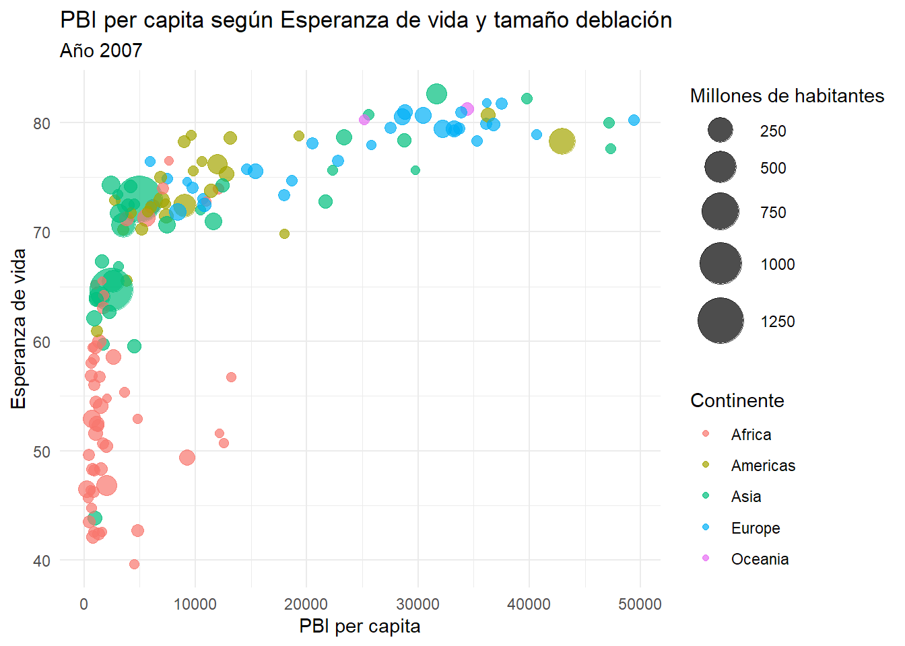
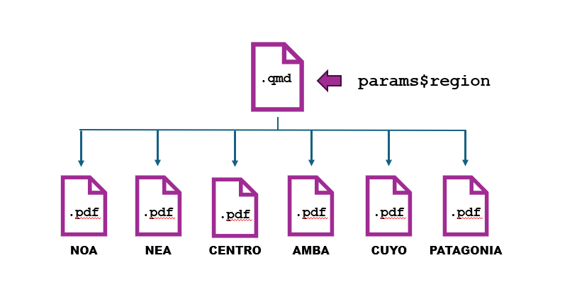

Comunicar con Quarto
Análisis de Datos 1 - Unidad 4
Quarto para todxs
Es un sistema de publicación científica y técnica de código abierto. Pensado para crear documentos dinámicos, presentaciones, libros y sitios web a partir de un simple archivo de texto plano.
Unifica y facilita el proceso de creación y colaboración entre varios lenguajes (Python, Observable, Julia, R…) y nos permite crear múltiples productos en múltiples formatos (HTML, pdf, Word, ppt)

Imagen de “Hello, Quarto” keynote de Julia Lowndes y Mine Çetinkaya-Rundel, RStudio::Conf(2022).
¿Qué podemos hacer con Quarto?
Artículos académicos (PDF) / Reportes HTML
Presentaciones (como la que estas viendo o en PDF)
Dashbords (estáticos o sobre shiny)
Sitios web/ blog
Libros
Documentos interactivos (Jupyter/Shiny)
Por qué Quarto
Reproducibilidad: Tu análisis, el código y los resultados (tablas, gráficos) viven juntos en un solo lugar. ¡Adiós a copiar y pegar!
Flexibilidad de Formatos: Con un mismo archivo fuente (.qmd), podes generar muchísimos tipos de salida: HTML, PDF, Word, ¡y más!
Profesionalismo: Crea entregables con una apariencia pulida y profesional sin mucho esfuerzo.
Flujo de trabajo simple: Escribis tu contenido en Markdown, integras tus bloques de código y ¡renderizas!
¿Quarto vs. R Markdown?
Quarto es el sucesor de R Markdown. Si ya conocías R Markdown, Quarto te resultará muy familiar, pero ofrece más funciones, flexibilidad y soporte para otros lenguajes más allá de R.
Instalar Quarto
Para instalar Quasrto simplemente vamos a ir a https://quarto.org/docs/get-started y vamos a descargar la versión correspondiente a nuestrp sistema operativo
Tip
Si bien nosotros vamos a usarlo desde RStudio está bueno que sepas que podemos usar Quarto desde otras plataformas como VS Code, Jupyter.
Anatomía de un Archivo Quarto (.qmd)
Un archivo Quarto (.qmd) tiene una estructura clara que lo hace fácil de entender:


1.El Encabezado YAML (---)
Es la sección de configuración al inicio del archivo.
🥪 Se define entre tres guiones (---) al principio y al final como un sanwich
🎯 Acá le decimos a Quarto:
Los metadatos de nuestro archivo (título, subtitulo, autor, fecha)
El / los formatos: html, pdf, wordetc. y características específicas de comportamiento de ese formato
Parámetros de automatización
1.El Encabezado YAML: opciones
Dentro del YAML vamos a tener diferentes opciones. por ej
---
title: "Informe Gapmider demo"
author: "Betsy Cohen"
date: "01-06-2025"
format:
html:
toc: true # hacer una tabla de contenidos
toc-location: left # poner la tabla de contenidos a la izq
number-sections: true # numerar las secciones
code-fold: true # desplegar el código
embed-resources: true # un html auto contenido (evitar dependencias).
---Controlando los themes.
Dentro de las opciones de YAML podemos elegir diferentes themes. Quarto incluye 25 themes diferentres que vienen del proyecto Bootswatch
---
title: "Informe Gapmider demo"
author: "Betsy Cohen"
date: "01-06-2025"
format:
html:
toc: true # hacer una tabla de contenidos
toc-location: left # poner la tabla de contenidos a la izq
number-sections: true # numerar las secciones
code-fold: true # desplegar el código
embed-resources: true # un html auto contenido (evitar dependencias).
theme: minty # nos permite controlar el estilo
---Tu propio estilo
También podes crear tus propios themes con los colores de tu organización o empresa. Para ello podes usar el paquete brand.yml que se integra al conjunto de los archivos que crees con Quarto. Más info en: https://posit-dev.github.io/brand-yml/
2.Texto en Markdown
Acá es donde escribis tu contenido de texto. Markdown es un lenguaje de marcado simple que te permite formatear texto fácilmente:
- Títulos:
# Título 1,## Título 2,### Título 3, etc. - Negritas:
**texto en negrita** - Itálicas:
*texto en itálica* - Listas:
- Item 1- Item 2 - Enlaces
[Un link](www.ellink.com.ar) - Imágenes

3.Bloques de Código (Code Chunks)
El chunck donde vamos a poner el código de R (o Python, etc.). Abajo de eso vamos a ir viendo el resultado de esa ejecución.
Los definimos con los backticks y el nombre de del lenguaje entre llaves.
Shortcuts:
ctrl+alt+i
haciendo clic en el botón en la parte superior del Quarto document
3.Bloques de Código (Code Chunks)
Por ejemplo esto es un ejemplo de chuck
Warning: package 'tidyverse' was built under R version 4.2.3Warning: package 'tibble' was built under R version 4.2.3Warning: package 'purrr' was built under R version 4.2.3Warning: package 'dplyr' was built under R version 4.2.3Warning: package 'forcats' was built under R version 4.2.3Warning: package 'lubridate' was built under R version 4.2.3── Attaching core tidyverse packages ──────────────────────── tidyverse 2.0.0 ──
✔ dplyr 1.1.4 ✔ readr 2.1.4
✔ forcats 1.0.0 ✔ stringr 1.5.0
✔ ggplot2 3.5.2 ✔ tibble 3.2.1
✔ lubridate 1.9.2 ✔ tidyr 1.3.0
✔ purrr 1.0.2
── Conflicts ────────────────────────────────────────── tidyverse_conflicts() ──
✖ dplyr::filter() masks stats::filter()
✖ dplyr::lag() masks stats::lag()
ℹ Use the conflicted package (<http://conflicted.r-lib.org/>) to force all conflicts to become errorsWarning: package 'gapminder' was built under R version 4.2.3gapminder %>%
mutate(pop = pop/1000000) %>%
filter(year == 2007) %>%
ggplot(aes(x = gdpPercap, y= lifeExp, size = pop, color = continent)) +
geom_point(alpha = 0.7) +
scale_size(range = c(2, 12)) +
labs(title = "PBI per capita según Esperanza de vida y tamaño deblación",
subtitle = "Año 2007",
x = "PBI per capita",
y = "Esperanza de vida",
size = "Millones de habitantes",
color = "Continente")+
theme_minimal()
Las opciones de los Chunks (#|)
En la parte superior de los chuncks podemos controlar el comportamiento de cada bloque de código con opciones específicas. Para usarlas vamos a usar el signo #|:
- #| echo: false Oculta el código del output final, mostrando solo los resultados.
- #| eval: false No ejecuta el código, solo lo muestra.
- #| warning: false No incluir las advertencias en la salida
- #| include: false para incluir o no la salida
- #| output-location: slide: Útil en presentaciones para que el output aparezca en una nueva diapositiva.
- #| fig-width: y #|fig-height: Controla el tamaño de los gráficos.
4. Renderizar el Documento
Una vez que tenes tu archivo .qmd listo, el último paso es renderizarlo para generar el formato de salida deseado.
Poedes hacerlo de cuatro maneras:
 Desde botón Render: Usa el botón “Render” en la barra de herramientas.
Desde botón Render: Usa el botón “Render” en la barra de herramientas.✅ Chequeadno la casilla “Render on Save” y que cada vez que guardamos con cntrl+s renderiza los cambios.
Desde la Terminal: Ejecutando el comando
quarto render nombre_de_tu_archivo.qmd.Con la función quarto::quarto_render() en la consola o en el script
quarto::quarto_render( input = "ruta/nombre_de_tu_archivo.qmd")
 Desde botón Render: Usa el botón “Render” en la barra de herramientas.
Desde botón Render: Usa el botón “Render” en la barra de herramientas.Un archivo muchas salidas posibles
Con un mismo archivo .qmd, puedes generar una variedad de formatos simplemente haciendo el cambio en el YAML por ej. acá sacando el reporte tanto en html como en pdf lo cual nos va a dar la posibilidad de renderizar diferentes formatos
Controlando la Salida
Podes controlar cómo se ven y se comportan los elementos en tu documento final seteando dentro del YAML:
df-print: Define cómo se muestran los data.frames en el output (ej. kable para tablas más bonitas).
execute: Controla el comportamiento general de la ejecución del código en todo el documento.
A Practicar!
Paso 1: Documento HTML Básico: Crear un reporte HTML simple que combine texto, código R y sus resultados.
Paso 2: Tomando el mismo documento cambia el parámetro html por revealjs en tu archivo y probá qué pasa
Automatizando nuestros reportes con parámetros
Imaginate que necesitas generar un reporte de bibliotecas para cada provincia de Argentina, o un resumen de pingüinos para cada especie. ¡Hacerlo “a mano” sería un embole!
Los reportes parametrizados en Quarto resuelven esto.
Automatizando nuestros reportes con parámetros
Los parámetros son variables (dentro de un objeto especial que llamamos params)
El params lo definimos dentro del encabezado YAML de nuestro documento y después lo podemos ir usando a lo largo de nuestro código para que vayan automatizandose cada uno de los gráficos, títulos o elementos que necesitemos ir ajustando.
Quarto permite cambiar el valor de estos parámetros fácilmente para generar diferentes versiones del reporte y multiplicarlo como panes.
Qué tipo de variables podemos parametrizar
- Strings
- Números
- Valores dicotómicos (TRUE FALSE)
Parametrizando paso a paso (Modo manual)
Siguiendo el ejemplo de las regiones…
- Escribimos un reporte en Quarto usando como ejemplo una de las regiones (por ej. AMBA) lo renderizamos para ver si no gusta como quedó.
- En el YAML le indicamos un valor de default en
parms - Reemplazamos el valor con la variable
paramsa lo largo de nuestro reporte usando find y replace (cnrl+F) - Rendereamos cada uno de los reportes
Seteo el parametro en el YAML
Siguiendo con nuestro ejemplo de YAML que vimos al comienzo con la base Gapminder
Acceder al parámetro
Los parámetros son una lista
List of 1 $ continent: chr "Asia"
De igual manera que cualquier otro objeto de tipo lista accedemos a cada elemento con el signo $
[1] "Asia"
Si lo quiero agregar como texto a lo largo de mi reporte voy encerrar al parametro en una expresión de tipo r.
En el siguiente gráfico podemos observar los resultados para los países de Asia
Uso el parámetro a lo largo de mi documento
# Filtrar el dataset de Gapminder usando el Continente
gapminder %>%
filter(continent == params$continent)
mutate(pop = pop/1000000) %>%
filter(year == 2007) %>%
ggplot(aes(x = gdpPercap, y= lifeExp, size = pop, color = country)) +
geom_point(alpha = 0.7) +
scale_size(range = c(2, 12)) +
labs(title = paste("PBI per capita según Esperanza de vida y tamaño de población en", params$continent),
subtitle = "Año 2007",
x = "PBI per capita",
y = "Esperanza de vida",
size = "Millones de habitantes",
color = "País")+
theme_minimal()Más sobre automatización
Si te interesa aprender más sobre automatización y parametrización podes consultar
- Ryan, Jadey. 2024. “Parameterized Reports with Quarto: R-Ladies Abuja Workshop.” 21 de Febrero 21 2024. https://jadeyryan.com/talks/2024-02-21_rladies-abuja-quarto-params.
- Documentación de Quarto Parameters
Ahora a practicar!
![Three monsters in witch hats (covered in hex stickers for different R packages) work together to brew up a data science report on the banks of a wild river. They are surrounded by equipment for water quality measurements (like a Secchi disk, field journal, sampling bottles, and YSI). The background is a distant snow-covered mountain and pine trees. In the river alongside the witches are a curious turtle, mayflies, a jumping fish, and a dragonfly. Made with Angie Reed and Alena Reynolds for their 2024 Posit Conference Talk.](images/monsters_allison_horst.png)